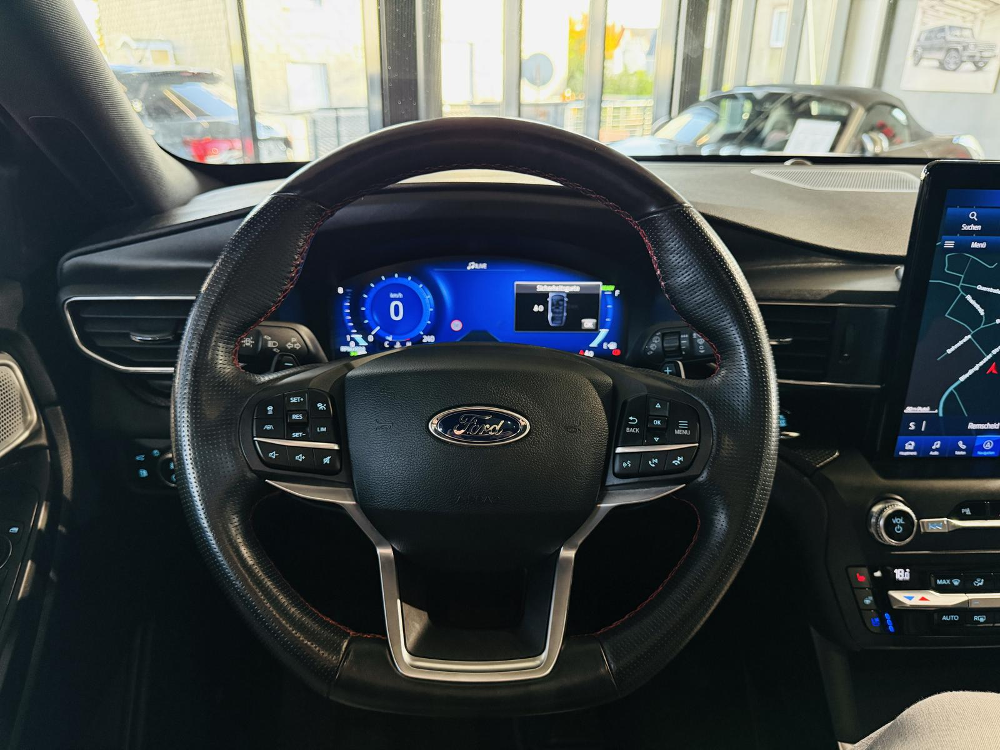
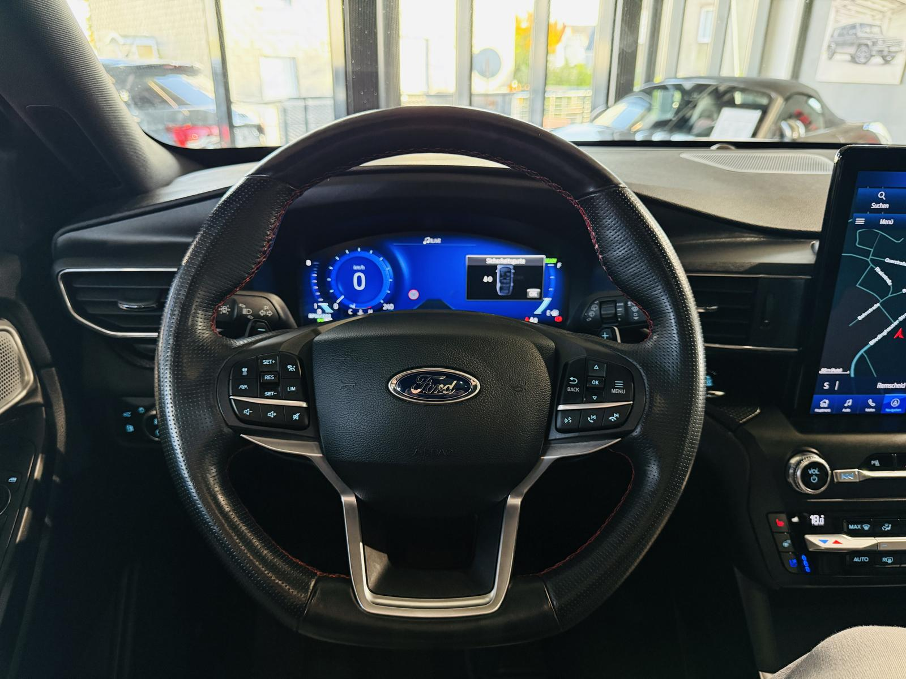

Ford Explorer ST-Line 4x4*PANO*360°KAMERA*B&O*LED*NAV
42990 PLN
Remscheid
55.219 km
- Unfallfrei
- Deutsches Fahrzeug
- Aus 2.Hand
- Lückenlos scheckheftgepflegt nur bei FORD
- 1. Inspektion: 12.622 km
- 2. Inspektion: 18.641 km
- 3. Inspektion: 27.103 km
- 4. Inspektion: 43.758 km
- Historie nachweisbar
- Sehr gepflegter Zustand
- Sofort verfügbar
Herzlich Willkommen bei Autosalon Remscheid.
Vielen Dank für Ihr Interesse an diesem wunderschönen Ford Explorer ST-Line.
Serien-Ausstattung:
- 3.Sitzreihe, Einzelsitze elektr. klappbar (2 Sitzplätze)
- Adaptive Geschwindigkeits-Regelanlage mit Stop&Go-Funktion
- Aktive Geräuschkompensation
- Anhängerkupplung Vorbereitung
- Anti-Blockier-System (ABS)
- Antischlupfregelung (ASR)
- Antriebsart: Allradantrieb
- Audio-Navigationssystem Ford mit AppLink
- Außenspiegel andersfarbig lackiert / Kontrastfarbe
- Außenspiegel elektr. verstell- und heizbar, mit Memory
- Brillenfach in Dachhimmel / Dachkonsole integriert
- Dachreling schwarz
- Diebstahl-Warnanlage
- Einstiegschienen mit Modell-Schriftzug
- Elektr. Bremskraftverteilung (EBD)
- Elektromotor 74 kW (Hybridantrieb)
- Elektron. Stabilitäts-Programm (ESP)
- Fahrassistenz-System: aktiver Park-Assistent Plus, Ein- und Auspark-Funktion und teilautomatisierter Fahrzeugführung
- Fahrassistenz-System: Ausweich-Assistent (Evasive Steer Assistance, ESA)
- Fahrassistenz-System: Bergabfahr-Assistent
- Fahrassistenz-System: Berganfahr-Assistent (Hill-Holder)
- Fahrassistenz-System: Notbrems-Assistent
- Fahrassistenz-System: Post-Collision-System
- Fahrassistenz-System: Pre-Collision-System
- Fensterheber elektrisch vorn + hinten
- FordPass Connect inkl. eCall
- Frontkamera mit Split View
- Frontscheibe heizbar
- Fußmatten Velours mit Ziernähte
- Gepäckraumabdeckung / Rollo
- Getriebe Automatik - Typ: 10R80 (10-Stufen)
- Heckleuchten LED
- Heckspoiler Wagenfarbe
- Induktionsladeschale für mobile Endgeräte
- Innenausstattung: Carbon-Dekor
- Innenspiegel mit Abblendautomatik
- Intelligent Protection System (IPS)
- Intelligenter Geschwindigkeits-Begrenzer
- Isofix-Aufnahmen für Kindersitz
- Karosserie: 5-türig
- KeyFree-System
- Klimaautomatik 2-Zonen
- Kofferraumdeckel / Heckklappe elektr. betätigt (Öffnung, sensorgesteuert)
- Kombiinstrument Digitalanzeige 12,3 Zoll
- Lenkrad (Sport/Leder, ST)
- Lenkrad heizbar
- Lenkrad mit Schaltwippen
- Lenksäule (Lenkrad) elektr. höhen-/längsverstellbar mit Memory
- LM-Felgen
- Mittelkonsole mit Armlehne
- Motor 3,0 Ltr. - 267 kW EcoBoost Hybrid
- My Key (2. Fahrzeugschlüssel programmierbar)
- Nebelscheinwerfer LED
- Panorama-Schiebedach elektr. mit Solar-Reflect
- Parkbremse elektrisch mit Auto-Hold-Funktion
- Parkpilotsystem vorn und hinten
- Power KeyFree-Startfunktion
- Radstand 3025 mm
- Reifendruck-Kontrollsystem
- Reserverad als Notrad
- Rückfahrkamera mit Split View
- Schadstoffarm nach Abgasnorm Euro 6d-TEMP
- Scheibenwischer mit Regensensor
- Scheinwerfer LED
- Scheinwerfer-Assistent mit Tag-/Nachtsensor
- Servolenkung elektrisch
- Sitz vorn links elektr. verstellbar (10-fach, mit Memory)
- Sitz vorn rechts elektr. verstellbar (8-fach)
- Sitzausstattung: 7-Sitzer
- Sitzbezug / Polsterung: Leder Premium
- Sitze vorn klimatisiert
- Sitzheizung hinten
- Sound-System Bang & Olufsen Play
- Sport-Fahrwerk
- Sportsitze vorn
- Start/Stop-Anlage
- Steckdose (12V-Anschluß) im Koffer-/Laderaum
- Steckdose 230V
- Türverkleidung Leder
- Verglasung hinten abgedunkelt (Privacy Glass)
- Wankneigungskontrolle (Roll Stability Control, RSC)
- Zentralverriegelung mit Fernbedienung
Für einen individuellen Beratungstermin bitten wir Sie Kontakt zu unserem Verkaufsteam aufzunehmen. Gerne begrüßen wir Sie vor Ort oder am Telefon und präsentieren Ihnen das Fahrzeug im Detail.
Der Gebrauchtwagenkauf ist Vertrauenssache! Mit unserem Qualitäts- und Leistungsversprechen sind Sie auf der sicheren Seite:
Unser Service für Sie:
- Finanzierung bis zu 96 Monaten (auch ohne Anzahlung möglich).
- Probefahrt und Besichtigung nach Terminabsprache möglich.
- Inzahlungnahme ihres Gebrauchten PKW zu fairen Preisen.
- Abholservice vom Flughafen & Bahnhof auf Anfrage.
- Gebrauchtwagengarantie bis zu 24 Monaten möglich
- 5 Tages Kurzkennzeichen organisierbar
Unseren kompletten Fahrzeugbestand finden sie auf: http://home.mobile.de/AutosalonremscheidGmbH
Gerne laden wir Sie persönlich zu einer Besichtigung oder Probefahrt ein.
Öffnungszeiten:
Mo.-Fr. : 9:30-18:00 Uhr
Samstag: 10:00-14:00 Uhr
http://www.autosalon-remscheid.de
Für weitere Fragen steht Ihnen ihr Autosalon Remscheid Team gerne zur verfügung.
Alle Angaben ohne Gewähr! Irrtümer, Änderungen und Zwischenverkauf vorbehalten.
 
